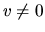
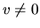
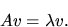
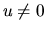
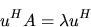

Next: Singular Value Decomposition (SVD)
Up: Standard Eigenvalue and Singular
Previous: Symmetric Eigenproblems (SEP)
Contents
Index
The nonsymmetric eigenvalue problem is to find the eigenvalues,
 ,
and corresponding eigenvectors, ,
such that
,
and corresponding eigenvectors, ,
such that

A real matrix A may have complex eigenvalues, occurring as complex conjugate
pairs. More precisely, the vector v is called a right
eigenvector of A, and a vector 
satisfying

is called a left eigenvector of A.
This problem can be solved
via the Schur factorization of A,
defined in the real case as
A = ZTZT,
where Z is an orthogonal matrix and T is an upper quasi-triangular matrix
with 1-by-1 and 2-by-2 diagonal blocks, the 2-by-2 blocks
corresponding to complex conjugate pairs of eigenvalues of A. In the complex
case the Schur factorization is
A = ZTZH,
where Z is unitary and T is a complex upper triangular matrix.
The columns of Z are called the Schur vectors.
For each k
 ,
the first k columns of Z form an orthonormal
basis for the invariant subspace corresponding to the
first k eigenvalues on the diagonal of T. Because this
basis is orthonormal, it is preferable in many
applications to compute Schur vectors rather than
eigenvectors. It is possible to order the Schur
factorization so that any desired set of k eigenvalues
occupy the k leading positions on the diagonal of T.
,
the first k columns of Z form an orthonormal
basis for the invariant subspace corresponding to the
first k eigenvalues on the diagonal of T. Because this
basis is orthonormal, it is preferable in many
applications to compute Schur vectors rather than
eigenvectors. It is possible to order the Schur
factorization so that any desired set of k eigenvalues
occupy the k leading positions on the diagonal of T.
Two pairs of drivers are provided, one pair focusing on the Schur
factorization, and the other pair on the eigenvalues and eigenvectors
as shown in Table 2.5:
- xGEES: a simple driver that computes all or part of the Schur
factorization of A, with optional ordering of the eigenvalues;
- xGEESX: an expert driver that can additionally compute condition
numbers for the average of a selected subset of the eigenvalues, and for
the corresponding right invariant subspace;
- xGEEV: a simple driver that computes all the eigenvalues of A,
and (optionally) the right or left eigenvectors (or both);
- xGEEVX: an expert driver that can additionally balance the
matrix to improve the conditioning of the eigenvalues and eigenvectors,
and compute condition numbers for the eigenvalues or right eigenvectors
(or both).
Next: Singular Value Decomposition (SVD)
Up: Standard Eigenvalue and Singular
Previous: Symmetric Eigenproblems (SEP)
Contents
Index
Susan Blackford
1999-10-01